K Nearest Neighbors Classified Target Prediction
Let’s start by importing necessary libraries for this project
import pandas as pd
import numpy as np
import matplotlib.pyplot as plt
import seaborn as sns
%matplotlib inlineGet the Data
** Read the ‘KNN_Project_Data csv file into a dataframe **
df = pd.read_csv('KNN_Project_Data')Check the head of the dataframe.
df.head() | XVPM | GWYH | TRAT | TLLZ | IGGA | HYKR | EDFS | GUUB | MGJM | JHZC | TARGET CLASS | |
|---|---|---|---|---|---|---|---|---|---|---|---|
| 0 | 1636.670614 | 817.988525 | 2565.995189 | 358.347163 | 550.417491 | 1618.870897 | 2147.641254 | 330.727893 | 1494.878631 | 845.136088 | 0 |
| 1 | 1013.402760 | 577.587332 | 2644.141273 | 280.428203 | 1161.873391 | 2084.107872 | 853.404981 | 447.157619 | 1193.032521 | 861.081809 | 1 |
| 2 | 1300.035501 | 820.518697 | 2025.854469 | 525.562292 | 922.206261 | 2552.355407 | 818.676686 | 845.491492 | 1968.367513 | 1647.186291 | 1 |
| 3 | 1059.347542 | 1066.866418 | 612.000041 | 480.827789 | 419.467495 | 685.666983 | 852.867810 | 341.664784 | 1154.391368 | 1450.935357 | 0 |
| 4 | 1018.340526 | 1313.679056 | 950.622661 | 724.742174 | 843.065903 | 1370.554164 | 905.469453 | 658.118202 | 539.459350 | 1899.850792 | 0 |
EDA
Since this data is artificial, we’ll just do a large pairplot with seaborn.
Use seaborn on the dataframe to create a pairplot with the hue indicated by the TARGET CLASS column.
# THIS IS GOING TO BE A VERY LARGE PLOT
sns.pairplot(df,hue='TARGET CLASS',palette='coolwarm')<seaborn.axisgrid.PairGrid at 0x1197505f8>

Standardize the Variables
Time to standardize the variables.
** Import StandardScaler from Scikit learn.**
from sklearn.preprocessing import StandardScaler** Create a StandardScaler() object called scaler.**
scaler = StandardScaler()** Fit scaler to the features.**
scaler.fit(df.drop('TARGET CLASS',axis=1))StandardScaler(copy=True, with_mean=True, with_std=True)
Use the .transform() method to transform the features to a scaled version.
scaled_features = scaler.transform(df.drop('TARGET CLASS',axis=1))Convert the scaled features to a dataframe and check the head of this dataframe to make sure the scaling worked.
df_feat = pd.DataFrame(scaled_features,columns=df.columns[:-1])
df_feat.head()| XVPM | GWYH | TRAT | TLLZ | IGGA | HYKR | EDFS | GUUB | MGJM | JHZC | |
|---|---|---|---|---|---|---|---|---|---|---|
| 0 | 1.568522 | -0.443435 | 1.619808 | -0.958255 | -1.128481 | 0.138336 | 0.980493 | -0.932794 | 1.008313 | -1.069627 |
| 1 | -0.112376 | -1.056574 | 1.741918 | -1.504220 | 0.640009 | 1.081552 | -1.182663 | -0.461864 | 0.258321 | -1.041546 |
| 2 | 0.660647 | -0.436981 | 0.775793 | 0.213394 | -0.053171 | 2.030872 | -1.240707 | 1.149298 | 2.184784 | 0.342811 |
| 3 | 0.011533 | 0.191324 | -1.433473 | -0.100053 | -1.507223 | -1.753632 | -1.183561 | -0.888557 | 0.162310 | -0.002793 |
| 4 | -0.099059 | 0.820815 | -0.904346 | 1.609015 | -0.282065 | -0.365099 | -1.095644 | 0.391419 | -1.365603 | 0.787762 |
Train Test Split
Use train_test_split to split your data into a training set and a testing set.
from sklearn.model_selection import train_test_splitX_train, X_test, y_train, y_test = train_test_split(scaled_features,df['TARGET CLASS'],
test_size=0.30)Using KNN
Import KNeighborsClassifier from scikit learn.
from sklearn.neighbors import KNeighborsClassifierCreate a KNN model instance with n_neighbors=1
knn = KNeighborsClassifier(n_neighbors=1)Fit this KNN model to the training data.
knn.fit(X_train,y_train)KNeighborsClassifier(algorithm='auto', leaf_size=30, metric='minkowski',
metric_params=None, n_jobs=1, n_neighbors=1, p=2,
weights='uniform')
Predictions and Evaluations
Let’s evaluate our KNN model!
Use the predict method to predict values using your KNN model and X_test.
pred = knn.predict(X_test)** Create a confusion matrix and classification report.**
from sklearn.metrics import classification_report,confusion_matrixprint(confusion_matrix(y_test,pred))[[112 40]
[ 34 114]]
print(classification_report(y_test,pred)) precision recall f1-score support
0 0.77 0.74 0.75 152
1 0.74 0.77 0.75 148
avg / total 0.75 0.75 0.75 300
Choosing a K Value
Let’s go ahead and use the elbow method to pick a good K Value!
** Create a for loop that trains various KNN models with different k values, then keep track of the error_rate for each of these models with a list. Refer to the lecture if you are confused on this step.**
error_rate = []
# Will take some time
for i in range(1,40):
knn = KNeighborsClassifier(n_neighbors=i)
knn.fit(X_train,y_train)
pred_i = knn.predict(X_test)
error_rate.append(np.mean(pred_i != y_test))Now create the following plot using the information from your for loop.
plt.figure(figsize=(10,6))
plt.plot(range(1,40),error_rate,color='blue', linestyle='dashed', marker='o',
markerfacecolor='red', markersize=10)
plt.title('Error Rate vs. K Value')
plt.xlabel('K')
plt.ylabel('Error Rate')<matplotlib.text.Text at 0x11cbdb710>

Retrain with new K Value
Retrain your model with the best K value (up to you to decide what you want) and re-do the classification report and the confusion matrix.
# NOW WITH K=30
knn = KNeighborsClassifier(n_neighbors=30)
knn.fit(X_train,y_train)
pred = knn.predict(X_test)
print('WITH K=30')
print('\n')
print(confusion_matrix(y_test,pred))
print('\n')
print(classification_report(y_test,pred))WITH K=30
[[127 25]
[ 23 125]]
precision recall f1-score support
0 0.85 0.84 0.84 152
1 0.83 0.84 0.84 148
avg / total 0.84 0.84 0.84 300